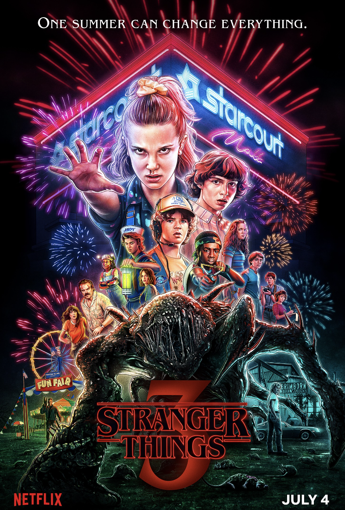

I remember playing this game in elementary school when my class was learning about the Oregon Trail. Along with our lessons, we would play this game to get a better understanding of the path that was taken to travel across the country for these families. I think the simplicity of the graphics and the gameplay were what really stood out to me about this game. It was fun to be able to input your own names and choose your journey in a very accessible way. Every once in a while I'll think about it and try to play it again just for fun because it brings me back.
I chose Stranger Things as my topic for Project 1 because I binge watched it over the summer and have been obsessed with it ever since. I love the storyline, the CGI, the character development, and I felt that it had the perfect number of seasons to fit into this project. Also, it could be a way to recap what has happened in the series so far before the release of the fifth season.
I don't have a particular site that I am drawing inspiration from, but I do like this poster, and have been drawing a little bit of inspiration from it on this project:


This website drew my attention because of how the background elements move as you are scrolling down the page. In the sections with a blue background, there are smaller images that move faster than the speed of the user's scroll, making the website more visually interesting as you read it.
Another element I like about this website is that the designers added a timer at the bottom that is constantly going as long as the user is still on the page. It's a small detail but it further elevates the narrative they are trying to convey.